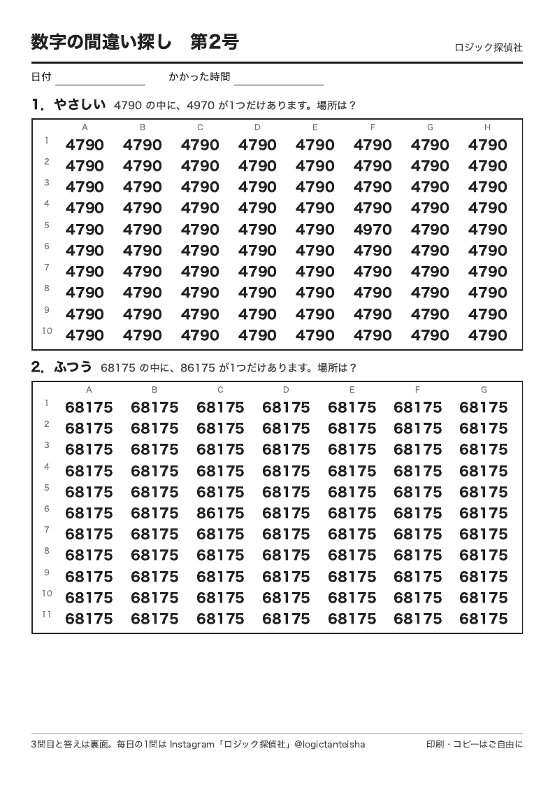
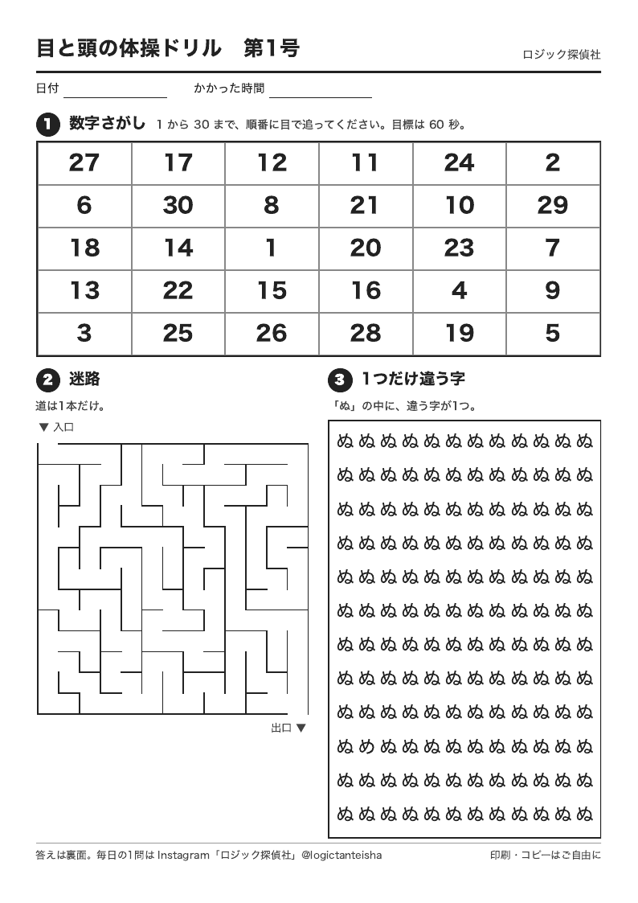

数字の間違い探し 第2号
A4で1枚・3問（4桁・5桁・6桁）。答えは裏の下に、さかさまに。

第2号を開く（無料）脳トレドリル 第1号
数字さがし・迷路・1つだけ違う字。表が問題、裏が答えです。

第1号を開く（無料）- ご家庭のプリンターで、A4の紙に印刷できます。
- 印刷やコピーは自由です。ご家族やお仲間の集まりでもどうぞ。
- 印刷しなくても、画面でそのまま解けます。
動く問題は毎日 Instagram @logictanteisha で。
A4で1枚・3問（4桁・5桁・6桁）。答えは裏の下に、さかさまに。

第2号を開く（無料）数字さがし・迷路・1つだけ違う字。表が問題、裏が答えです。

第1号を開く（無料）動く問題は毎日 Instagram @logictanteisha で。